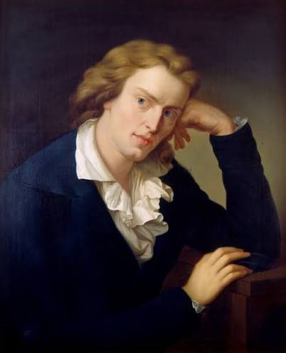

Lernziele
Ihr …
- nennt zentrale Merkmale des Sturm und Drang und belegt sie an den „Räubern“,
- erläutert den Genie- und Freiheitsbegriff der Epoche und die Kritik am Absolutismus,
- stellt Zusammenhänge zwischen Schillers Biografie (Karlsschule, Flucht 1782) und dem Stück her,
- beschreibt typische Merkmale der Sprache des Stücks.
Laufzettel
| Station | Thema | Pflicht/Wahl | erledigt |
|---|---|---|---|
| S1 | Epochenmerkmale | Pflicht | ☐ |
| S2 | Genie und Freiheit | Wahl | ☐ |
| S3 | Kritik am Absolutismus | Wahl | ☐ |
| S4 | Schillers Biografie | Pflicht | ☐ |
| S5 | Die Sprache des Stücks | Wahl | ☐ |
Station 1 · Epochenmerkmale des Sturm und Drang
Der Sturm und Drang (etwa 1765–1785) ist eine Bewegung junger Autoren, die gegen die einseitige Vernunftgläubigkeit der Aufklärung und gegen die erstarrte Ständegesellschaft rebellierten. Den Namen gab ein Drama von Friedrich Maximilian Klinger (1776). Wichtige Vertreter sind der junge Goethe („Götz von Berlichingen“, „Die Leiden des jungen Werther“, „Prometheus“), Schiller („Die Räuber“, „Kabale und Liebe“), Lenz, Klinger und Bürger; Herder und Hamann lieferten die Ideen.
Typische Merkmale
- Gefühl statt nur Verstand: Leidenschaft, „Herz“, starke Affekte
- Genie: der schöpferische Mensch, der sich keine Regeln vorschreiben lässt
- Freiheit und Selbstverwirklichung gegen Zwang und Konvention
- Natur als Gegenbild zur künstlichen Gesellschaft
- Rebellion gegen Fürstenwillkür, Adel, Kirche, Väter
- Shakespeare als Vorbild: offene Dramenform, viele Schauplätze, große Zeiträume
- Sprache: Ausrufe, Abbrüche, Kraftausdrücke, Bilder – „Sprache des Herzens“
Aufgabe S1
- Basis Ordne mindestens fünf Merkmale je einer Stelle aus den „Räubern“ (Akt/Szene) zu. Lege dazu eine Tabelle an: Merkmal – Textstelle – Erläuterung.
- Erweiterung Erläutere, inwiefern das Stück die Ideale des Sturm und Drang zugleich kritisch beleuchtet. Denke an Karls Ende.
Station 2 · Genie und Freiheit – der Mythos Prometheus
Prometheus ist in der griechischen Mythologie der Titan, der den Göttern das Feuer stahl und es den Menschen brachte. Zur Strafe ließ Zeus ihn an einen Felsen schmieden. Für die jungen Dichter des Sturm und Drang wurde er zum Symbol des schöpferischen, rebellischen Menschen. Karl beginnt seine erste Rede mit diesem Bild:
„Der lohe Lichtfunke Prometheus' ist ausgebrannt, dafür nimmt man jetzt die Flamme von Bärlappenmehl – Theaterfeuer, das keine Pfeife Tabak anzündet.“Karl, I,2 [S. ?]
Goethe schrieb 1774 die Hymne „Prometheus“. Sie beginnt und endet so:
Bedecke deinen Himmel, Zeus,
Mit Wolkendunst,
Und übe, dem Knaben gleich,
Der Disteln köpft,
An Eichen dich und Bergeshöhn;
Mußt mir meine Erde
Doch lassen stehn […]
Hier sitz ich, forme Menschen
Nach meinem Bilde,
Ein Geschlecht, das mir gleich sei,
Zu leiden, zu weinen,
Zu genießen und zu freuen sich,
Und dein nicht zu achten,
Wie ich!
Aufgabe S2
- Basis Erläutere, welches Menschenbild Goethes Prometheus verkörpert (Haltung zu Zeus, Selbstverständnis).
- Basis Erkläre, was Karl mit dem Gegensatz „Lichtfunke Prometheus'“ – „Theaterfeuer“ über seine Zeit aussagt.
- Erweiterung Vergleiche Karls Freiheitsbegriff („Das Gesetz hat noch keinen großen Mann gebildet, aber die Freiheit brütet Kolosse und Extremitäten aus“, I,2) mit Franz' „Recht ist bei dem Überwältiger“ (I,1). Wo liegen Gemeinsamkeiten, wo Unterschiede?
Station 3 · Kritik am Absolutismus
Im Herzogtum Württemberg regierte Herzog Carl Eugen (1737–1793) absolutistisch: prunkvolle Hofhaltung, hohe Steuern, Willkür gegen Kritiker. Der Dichter und Journalist Christian Friedrich Daniel Schubart wurde 1777 ohne Prozess auf der Festung Hohenasperg eingekerkert und blieb dort zehn Jahre. Schubart hatte eine Erzählung über zwei ungleiche Brüder veröffentlicht („Zur Geschichte des menschlichen Herzens“, 1775), die Schiller als Anregung für die „Räuber“ diente. Schiller besuchte Schubart später auf dem Asperg.
Auf dem Titelblatt der Erstausgabe steht ein Spruch, der dem antiken Arzt Hippokrates zugeschrieben wird:
„Quae medicamenta non sanant, ferrum sanat, quae ferrum non sanat, ignis sanat.“Motto der „Räuber“ – Übersetzung: Was Arzneien nicht heilen, heilt das Eisen; was das Eisen nicht heilt, heilt das Feuer.
Kritik im Stück – Beispiele
- II,3: Karl hält dem Pater vor, dass die Mächtigen und die Kirche selbst Unrecht tun, und rechtfertigt seine Taten als Rache: „Mein Handwerk ist Wiedervergeltung – Rache ist mein Gewerbe.“
- III,2: Kosinsky erzählt, wie ein Fürst ihm seine Braut raubte und er durch Intrigen bei Hof alles verlor – fürstliche Willkür.
- I,2: Karl verachtet ein Leben in „Gesetzen“ und Konventionen, das den Menschen klein hält.
Aufgabe S3
- Basis Erläutere das Motto in Bezug auf das Stück: Wer ist „krank“, wer will mit „Eisen“ und „Feuer“ heilen?
- Basis Lies Kosinskys Erzählung (III,2) und beschreibe, welche Missstände sie zeigt.
- Erweiterung Erörtere: Rechtfertigt die Willkür der Mächtigen Karls Gewalt? Beziehe die Befreiung Rollers (II,3) ein, bei der Unschuldige sterben.
Station 4 · Schillers Biografie bis zur Flucht

| Jahr | Ereignis |
|---|---|
| 1759 | Am 10. November in Marbach am Neckar geboren; der Vater ist Offizier im Dienst des Herzogs. |
| 1773 | Auf Befehl Herzog Carl Eugens muss Schiller (13 Jahre) in die herzogliche Militärakademie, die spätere Hohe Karlsschule, eintreten – gegen seinen Wunsch, Theologie zu studieren. Strenger militärischer Drill, Uniform, Kontrolle bis ins Private; Besuche und Bücher werden überwacht. |
| 1774/76 | Zuerst Studium der Rechte, dann der Medizin. Heimliche Lektüre: Shakespeare, Rousseau, Goethe, Klopstock. |
| ab ca. 1777 | Arbeit an den „Räubern“ – heimlich, teils nachts. |
| 1780 | Abschluss; schlecht bezahlter Regimentsmedikus in Stuttgart, weiter unter der Kontrolle des Herzogs. |
| 1781 | „Die Räuber“ erscheinen anonym, auf eigene Kosten gedruckt. |
| 1782 | 13. Januar: Uraufführung in Mannheim; Schiller reist ohne Erlaubnis dorthin. Nach einer zweiten heimlichen Reise wird er mit Arrest bestraft. Der Herzog verbietet ihm, außer medizinischen Schriften etwas zu veröffentlichen – auch weil eine Bemerkung im Stück über Graubünden Proteste aus der Schweiz ausgelöst hatte. |
| 1782 | In der Nacht vom 22. auf den 23. September flieht Schiller mit seinem Freund, dem Musiker Andreas Streicher, aus Stuttgart nach Mannheim – während der Hof mit Festlichkeiten beschäftigt ist. |
| danach | Jahre in Mannheim, Leipzig/Dresden, Jena und Weimar; „Kabale und Liebe“ (1784), „Don Karlos“, Freundschaft mit Goethe. Schiller stirbt am 9. Mai 1805 in Weimar. |
Aufgabe S4
- Basis Nenne drei Erfahrungen aus Schillers Jugend, die sich im Stück wiederfinden lassen.
- Basis Erläutere, inwiefern man die „Räuber“ als Ausdruck von Schillers eigenem Freiheitsdrang lesen kann – und warum der Herzog das Stück als Provokation empfand.
- Erweiterung Gestalte einen kurzen Brief (ca. 150 Wörter), den Schiller in der Nacht seiner Flucht an seine Schwester Christophine schreiben könnte.
Station 5 · Die Sprache des Stücks
Schiller schrieb „Die Räuber“ in Prosa, nicht in Versen – aber in einer stark rhythmisierten, pathetischen Prosa. In der Vorrede beschreibt er Karl als „seltsamen Don Quixote“, „den wir im Räuber Moor verabscheuen und lieben, bewundern und bedauern“.
Sprachproben
- „Mir ekelt vor diesem tintenklecksenden Säkulum, wenn ich in meinem Plutarch lese von großen Menschen.“ (Karl, I,2)
- „Das Gesetz hat zum Schneckengang verdorben, was Adlerflug geworden wäre.“ (Karl, I,2)
- „Hm! Hm! – So ist es. Aber ich fürchte – ich weiß nicht – ob ich – Eurer Gesundheit –“ (Franz, I,1)
- „Recht ist bei dem Überwältiger, und die Schranken unserer Kraft sind unsere Gesetze.“ (Franz, I,1)
- „Ehrlicher Name! – wahrhaftig eine reiche Münze, mit der sich meisterlich schachern läßt, wer's versteht, sie gut auszugeben.“ (Franz, I,1)
- „O Karl! Karl! wüßtest du, wie deine Aufführung das Vaterherz foltert!“ (Der alte Moor, I,1)
Aufgabe S5
- Basis Bestimme in jeder Sprachprobe mindestens ein sprachliches Mittel (z. B. Neologismus, Antithese, Metapher, Ellipse, Aposiopese, Ausruf, Sentenz) und seine Wirkung. Nutzt das Glossar.
- Basis Vergleiche Karls und Franz' Sprechweise: Welche Unterschiede passen zu ihrem Charakter?
- Erweiterung Gestalte eine Szene von sechs Repliken, in der Karl und Franz über das Erbe streiten – im Stil Schillers.
Merkkasten
- Der Sturm und Drang (ca. 1765–1785) setzt Gefühl, Genie, Natur und Freiheit gegen die reine Vernunft der Aufklärung und gegen die Zwänge der Ständegesellschaft.
- „Die Räuber“ zeigen typische Merkmale: Kraftkerl als Held, Rebellion gegen Vater und Obrigkeit, offene Dramenform, pathetische Sprache.
- Zugleich hinterfragt Schiller den Geniekult: Karls Freiheit ohne Gesetz führt in Schuld und Gewalt.
- Schillers eigene Erfahrungen (Karlsschule, Herzog Carl Eugen, Schreibverbot, Flucht 1782) prägen das Stück.
Hausaufgabe
Recherchiere eine aktuelle Nachricht (aus den letzten Monaten), in der es um Radikalisierung, gezielte Falschinformation oder Selbstjustiz geht. Notiere Quelle, Datum und zwei Sätze Zusammenfassung. Bringe sie zu DS 5 mit.